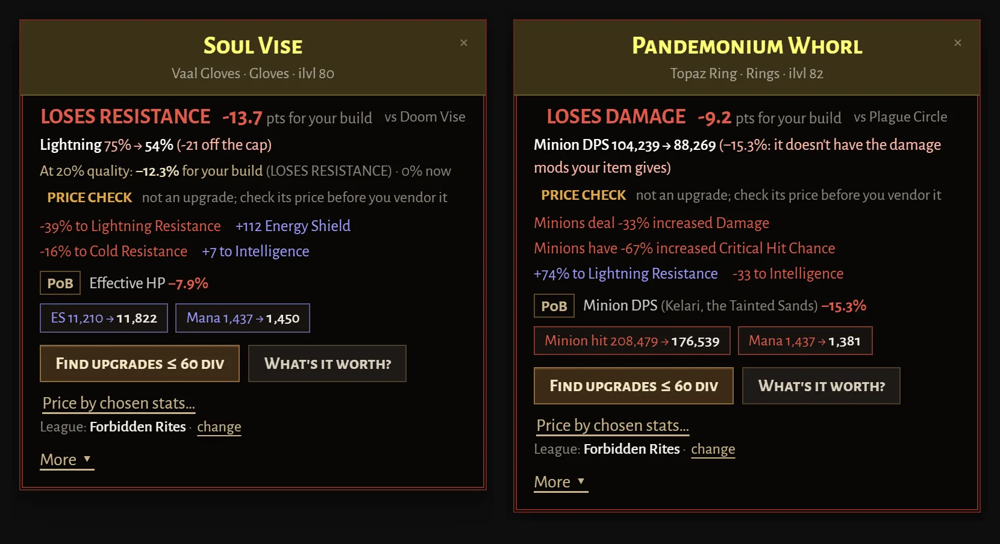
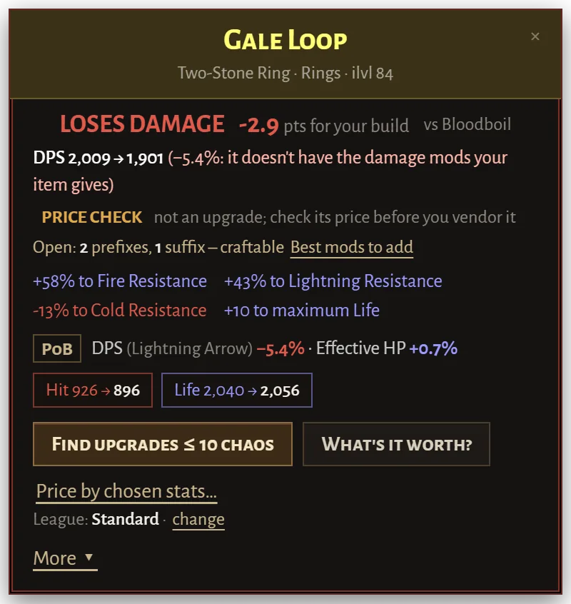
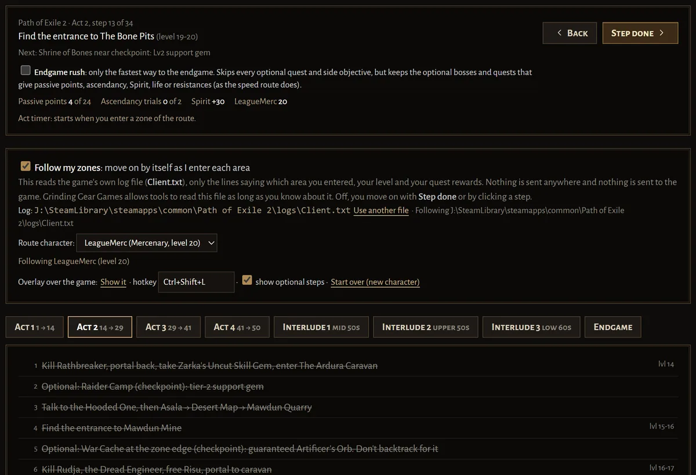
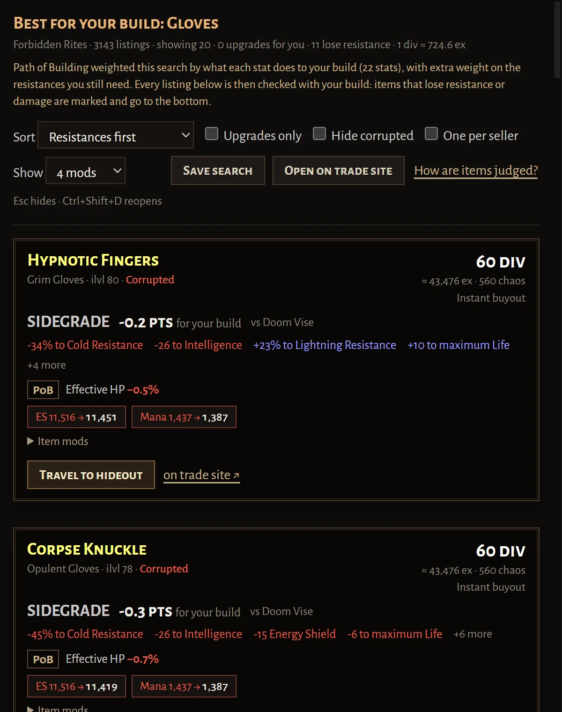
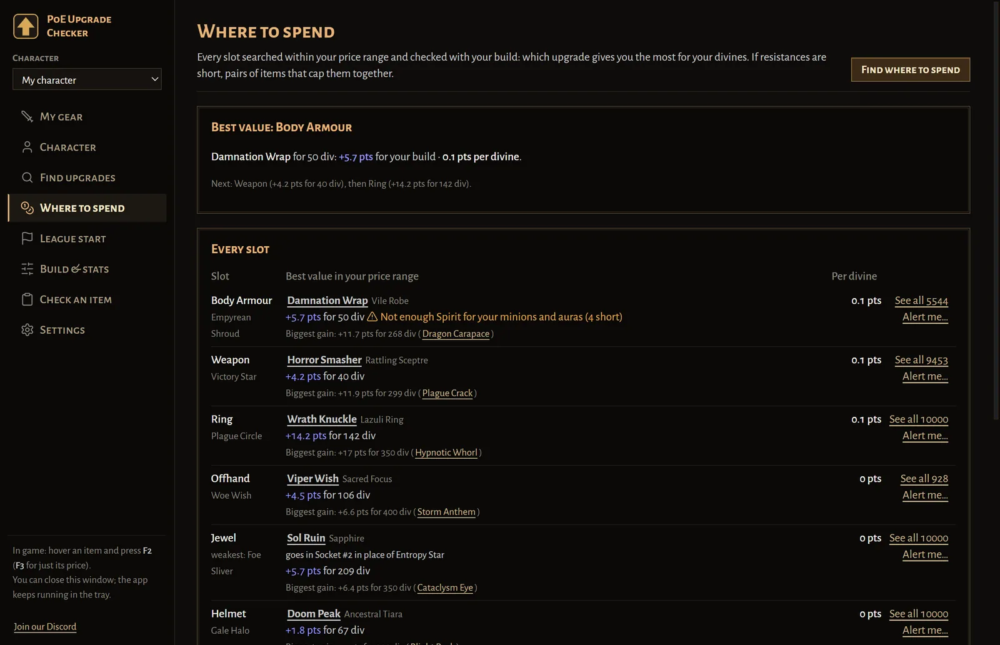
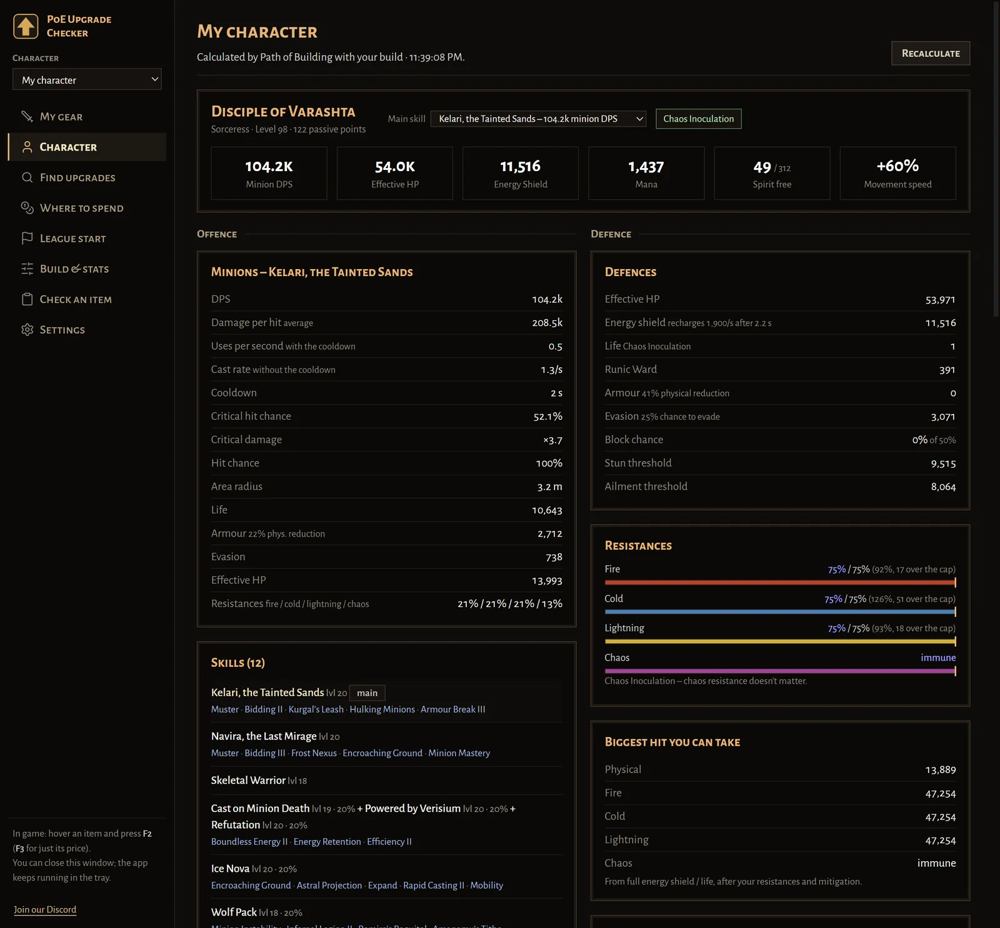
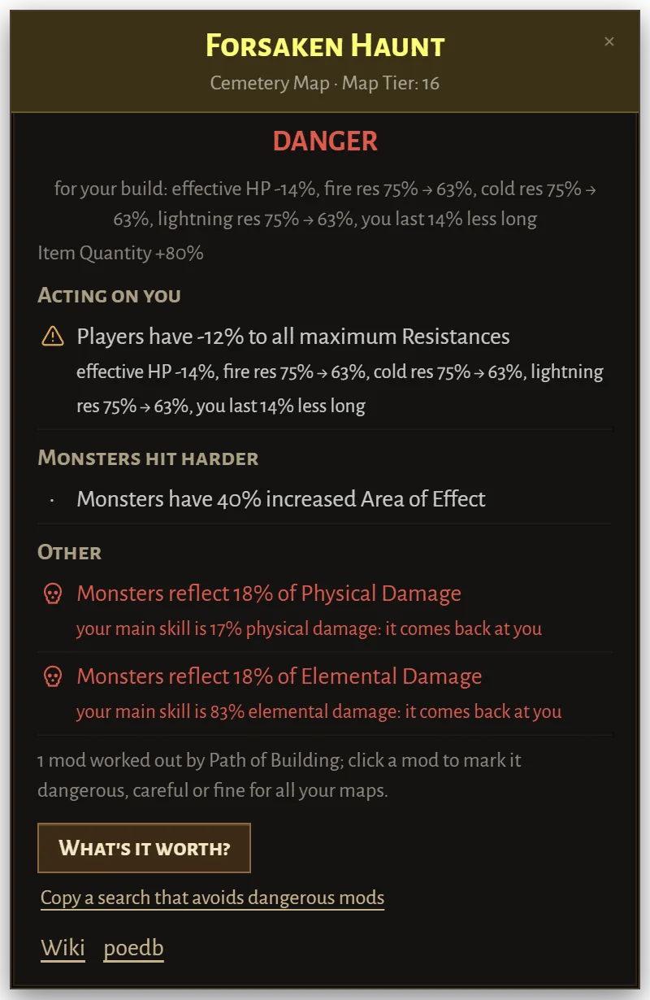
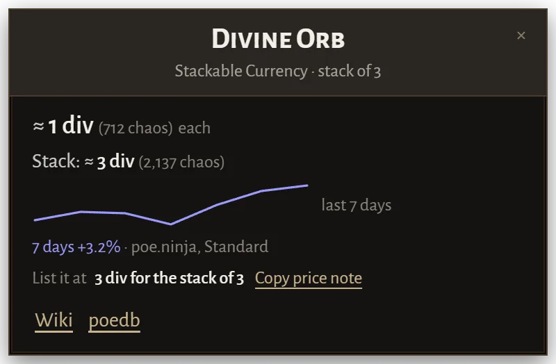

Free item upgrade checker for Path of Exile 2 and Path of Exile 1
Is it really an upgrade? Path of Building decides.
Hover an item and press F2. PoE Upgrade Checker swaps it into your Path of Building build and tells you what it really does to your damage, effective HP and resistances. Then it finds a better one on the trade site, inside your budget.
Windows 10/11 · Linux (experimental, Steam/Proton) · PoE2 and PoE1 · Free and open source · Updates itself · Setup guide
- Free and open source
- No account, no ads
- Windows and Linux
- PoE2 and PoE1
How it works, in game
Three steps, and you never leave the game. Every step in detail, with what each line of the popup means: the setup guide.
-
Load your build
Paste your Path of Building export or a pobb.in link: Path of Building 2 for PoE2, Path of Building Community for PoE1. Any class, any skill. Your gear slots fill in from it.
-
Hover and press F2
The verdict appears next to the item: Upgrade, Sidegrade, Loses resistance… with exactly what changes, and whether to keep, sell or vendor it.
-
Find a better one
One click searches the official trade site, weighted by what each stat is worth to your build, and judges every listing.
Never trade away what matters
An item that caps your lightning resistance but drops your minion damage by 20% isn't an upgrade, however good the numbers look. Items that cost you a resistance or your damage get a red verdict and go to the bottom of every search.
- Resistances first: items that cap one you're short of go to the top.
- Never lose damage: a big damage loss is flagged, whatever else it adds.
- Spirit, reservation and attributes: it warns before your minions, auras or gear stop working.
- Chaos Inoculation is recognised, and chaos resistance ignored.

Everything in one Path of Exile overlay
One free app for item checks, trade, prices, maps, loot filters and the campaign, in both games.
Is it an upgrade?
Every check runs your own build in Path of Building.
- Judged by Path of Building
- The app bundles Path of Building's calculation engine and runs it on your build, so verdicts know your passive tree, gems and configuration. Rings, jewels and flasks are tried in each slot they fit.
- Keep, sell or vendor
- A one-line answer under every item, from its verdict and its price. Selling? It suggests a listing price just under poe.ninja and copies the price note for your stash tab.
- At 20% quality, and the best mods to add
- Armour and weapons below 20% quality are judged again at 20%, and for an item with open prefixes or suffixes Path of Building tries the mods it can still roll and lists the best for your build.
- Mod tiers at a glance
- Every mod with its tier and how high it rolled, in the popup and in trade results, so you can see what's top tier and what's worth crafting over.
- Gem check
- F2 on a gem you use: Path of Building tries it at that level and quality in your build and shows the DPS and effective HP change, so you know if it's worth keeping.
- Best anoint and instil
- Path of Building tries every notable that can go on your amulet and lists the best for your build, with the damage and effective HP each adds and the oils or distilled emotions it takes.
- Best uniques for your build
- Every unique Path of Building knows that fits a slot, tried in your build and listed best first with its poe.ninja price and a trade search. Best value ranks deals the way Path of Building does: the upgrade, minus a little for each tenfold of the price.
- Pick your main skill
- On the Character page, every active skill of your build with its DPS, worked out by Path of Building; pick the one items are judged for. In PoE2 your weapon's default attack is in the list too. Without a build, gear scores follow what your build's damage is: melee, bows and crossbows, spells or minions.
Trade and prices
The official trade site and poe.ninja, read for your build.
- Trade search that knows your build
- Find upgrades, same stats or better, craftable bases, or a custom search. Results open in the app, each listing judged, with Travel to hideout and a ready whisper. Skip corrupted items, show one listing per seller, and run your last 30 searches again in one click.
- Where to spend your divines
- Every slot searched in your price range and ranked by how much better your build gets per divine, plus pairs of items that cap your resistances together. Set an alert for the next good deal.
- Price check, with history
- F2 on currency, cards, gems or uniques shows the poe.ninja price and the last 7 days. F3 prices anything on its own, rares, waystones and tablets from the trade site: every listing is compared with your item, so better ones don't push your price up, your own listing is left out, and when nothing listed is close you get a range, not a made-up number. Tell it Too low or Too high and it gets tuned on real checks.
- What sold
- About 3 hours after a trade price check, the app searches the same thing again and counts the instant buyout listings that are gone, sold or taken down, with their asking prices. Check the item again and you see what really sold, not just what's listed.
- For sale
- Everything you copy a price note for is kept in a list. One click checks the trade site: still listed, and how your price compares with the cheapest.
- Currency prices
- A free prices page for PoE2 and PoE1: every currency and fragment with today's price, the week's risers and fallers, and a 7-day trend.
Maps and bosses
Know what a map or a boss does to your build before you go in.
- Map and waystone check
- DANGER, CAREFUL or FINE for your build: max resistance and recovery mods are worked out by Path of Building, Thorns and the rest checked against what your build does.
- Can you take the hit? (PoE1)
- The boss check shows how many hits of each big boss attack you survive, Shaper to Maven, at Pinnacle and Uber, using Path of Building's boss presets.
- Search string builder
- Build the regex for the game's search box without learning regex: waystones and maps with at least so much rarity or pack size, in a tier range, without the mods you hate, or any item with 25% movement speed and 30% fire res. Each mod is cut to its shortest unique piece, it counts the 250 characters, and it tests the string on the item you just copied.
Loot filter
Your own filter, tuned to your build and changed while you play.
- Loot filter from your build
- Adds a section to your own filter that highlights rares with the mods Path of Building values most for each slot, and the bases you wear.
- Loot filter editor
- An overlay to change your filter while you play: find any item, or the one you just copied, see which rule styles it, and hide it, show it or give it new colours, size, sound, beam and minimap icon. Online filters are edited as a local copy, so the online one stays as your backup.
League start and leveling
The campaign, step by step, for both games.
- League start route
- The campaign for both games step by step, with every passive point, trial and permanent reward counted, and every optional quest marked. A small overlay over the game shows the step you're on; switch on Follow my zones and it moves on by itself. Or turn on Endgame rush for only the fastest way to maps. It warns when you're losing experience, times each act against your best run, and in PoE1 says which quest gems to take and buy for your build. Switching to your main for maps doesn't touch your leveller's route.
- Search strings and leveling mode
- Paste-ready searches for vendors and your stash (movement speed, the resistances you're short of) and for maps without the mods you marked dangerous, plus your own. Pick a key and it puts them on your clipboard in game, one after another. Leveling? Only see gear you can wear.
Your characters and the app
It follows your build, your gear and the game you are in.
- Your build stays in sync
- Import from pobb.in and update with one click, or link the build file you save in Path of Building and the app follows it every time you save.
- Gear that keeps up with your crafting
- Crafted on something you wear? Check it again and it's saved as it is now, after the popup shows what the craft did for your build. No setting your gear again after every exalt.
- Switches character with you
- Link your characters to their names in the game and the app switches to the one you're playing, from the game's log: your leveller's gear and build when you level, your main's when you map.
- Save as equipped with one key
- Hover an item you wear and press your key: it's saved in its slot, no popup click, with Undo.
- Character sheet and alerts
- Your whole character as Path of Building calculates it, damage per hit included, and notifications when a saved search gets new listings, paced to respect the trade site's limits.
- Built for playing both games
- It knows whether you're in PoE2 or PoE1 and keeps characters, league and prices for each, Standard included. Compact popup you can drag anywhere, text size and colour-blind options.
- What's new, back up and restore
- After each update the app shows what changed. Your characters, gear, builds and settings go to one file and back, for a new PC or a fresh install.

Path of Exile 1 support
The same F2 check works in PoE1, with Path of Building Community and your own build. It checks what PoE1 players care about:
- Links: an item with fewer links than the gems you use in that slot is flagged.
- Flasks are tried in your flask slots, and life and mana flasks compared on recovery.
- Anoints: an amulet without yours is called out, so you know to anoint it again.
- Prices in chaos and divines from poe.ninja, and the PoE1 trade site, league or Standard.
- Ready for 3.30: maps are read with Atlas Drops and More Threads, and Threads and Soul Cores are priced from poe.ninja.
- Cluster jewels priced as cluster jewels: by size, number of passives, small passive bonus and your notables.
- Price checks that know PoE1's items: caster weapons by their mods, not their DPS; fractured mods as fractured; a magic flask as its own kind; a tier 17 map only from listings of the same map.
In the app since 0.5.1 and out of beta, with patch 3.30 and the PoE1 price checks in 0.5.5. Cluster and timeless jewels are priced but not yet judged for your build.
League start route
The whole campaign for both games, step by step, in the app and in a small overlay over the game (Ctrl+Shift+L).
- Every reward counted: passive points, trials and ascendancy, resistances and Spirit as you get them.
- Follows your zones if you switch it on: it reads only the area and level lines of the game's log, and nothing is sent anywhere.
- Optional quests are all listed, or turn on Endgame rush for just the fastest way to maps, every passive point included.
- Keeps your characters apart: only the character the route is for moves it on, so mapping on your main doesn't touch your leveller's route.
- XP penalty warning: it says when you've out-levelled a zone (or are under-levelled) and losing experience.
- Act timer: each act timed while you play, against your best and last run.
- PoE1 quest gems for your build: which gem to take and which to buy at every hand-in, from your Path of Building build.
New in 0.5.2, with the XP warning, act timer and quest gems in 0.5.3. Routes for PoE1 3.29 and PoE2 0.5.5, from exile-leveling and Splitstone; updated for 3.30 and 1.0 once their campaign changes are known.

See it in the app
Click a screenshot to see it larger.





Frequently asked questions
Something else? Ask on our Discord or email support@poe2upgrade.com.
Is it safe to use? Can it get me banned?
It's built to stay within the rules for third-party tools: it never reads game memory or changes game files (the only one it can read is the game's log, and only if you switch on Follow my zones or automatic character switching in League start), and its only input to the game is one Ctrl+C per key press, the same as copying an item yourself. Trade searches use the official trade site, slowing down whenever the site asks. It's a fan project, not affiliated with or endorsed by Grinding Gear Games.
Does it work with Path of Exile 1?
Yes, since version 0.5.1, and it's out of beta. It uses Path of Building Community for PoE1 and checks links, flasks and anoints too. Version 0.5.5 is ready for patch 3.30 and prices cluster jewels, caster weapons, fractured mods and tier 17 maps properly. It knows which game you're playing and keeps separate characters, leagues and prices for each.
Do I need Path of Building?
You don't need to install it: the app bundles Path of Building's calculation engine. You paste your Path of Building export or a pobb.in link once, and every item is judged with your passive tree, gems and configuration. In PoE2 it can also give a rough gear score without a build. New to it? See Path of Building for PoE2.
How do I price check items in Path of Exile 2?
Hover the item and press F3 (or F2 for the full check). Currency, gems, cards and uniques show their poe.ninja price with the last 7 days. Rares, waystones and tablets are priced from the trade site, on listings compared with your item: better ones and your own listing are left out, and when nothing listed is close you get a range instead of one made-up number.
Does it work on Linux with Proton?
Yes. There's a Linux AppImage (experimental) for Path of Exile 2 running through Steam with Proton, Lutris or Heroic, on X11 or Wayland. Path of Building runs inside the app, so verdicts are the same as on Windows. Windows 10 and 11 are fully supported. Setup and Steam Deck notes: PoE2 on Linux with Proton.
Can I see what items really sold for (trade history)?
The official trade site only shows what is listed, not what sold. About 3 hours after you price check an item on the trade site, the app runs the same search again and counts the instant buyout listings that are gone, with their asking prices, so the next check shows what likely sold and for how much. Your own listings go on a For sale list that says if yours is still up and how many are cheaper now.
Does it use poe.ninja prices?
Yes. Currency, gems, divination cards and uniques are priced from poe.ninja, with the last 7 days, through this site's cache. Rares are priced from the official trade site. There's also a currency prices page. The app isn't made by or affiliated with poe.ninja.
Is there a Discord?
Yes. Join the PoE Upgrade Checker Discord for news of new versions, help with setup, bug reports and ideas for what to build next. In the app: tray menu → Join our Discord, or the link in the main window's sidebar.
Is it free?
Yes. It's free and open source on GitHub, with no account and no ads, and it updates itself.
Join the community on Discord
News of new versions, help with setup, bug reports and ideas for what to build next.
Fair play and privacy
Nothing touches the game
It never reads game memory or injects anything. Its only input to the game is one Ctrl+C per key press, the same as copying an item yourself. The loot filter editor only changes filter files in the game's own Documents folder, never an online filter.
Your data stays on your PC
It talks to the official trade site, poe.ninja's prices (cached on this site) and GitHub (for updates). Path of Building runs locally. This website counts visits with Cloudflare Web Analytics, which uses no cookies, and keeps one number per day of views of its pages and clicks on Download and Discord (nothing about you).
Anonymous usage count
So we know how many people use it, the app tells this site a random install number, its version, Windows or Linux, and which game you played that day, a few times a day. From version 0.5.3 it also sends how many times that day you used each part (item checks, price checks, trade searches, League start steps), how far it's set up (yes/no) and how many times something went wrong, so we know what to fix. Only numbers: no account, items, builds or searches, and no IP addresses are kept. Turn it off in Settings or the first-run guide.
Fan-made
Not affiliated with or endorsed by Grinding Gear Games. Free and open source on GitHub.
Stop guessing. Press F2.
Download PoE Upgrade CheckerIn the game, set Options → Graphics to Windowed Fullscreen so the overlay can draw over the game. The first-run guide does the rest, and the setup guide covers everything step by step.
Stuck or found a bug? Ask on our Discord, email support@poe2upgrade.com or open an issue on GitHub. Contributions are welcome.